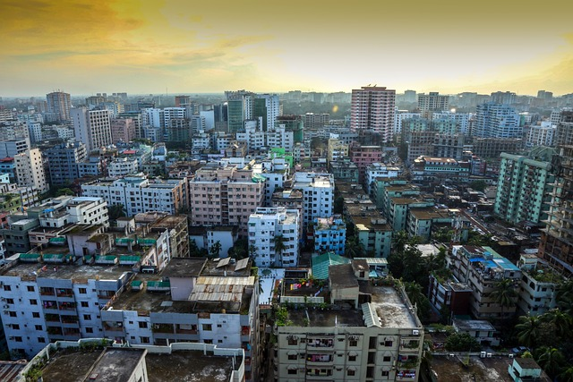

Dhaka is the capital and one of the oldest cities of Bangladesh. The history of Dhaka begins with the existence of urbanised settlements in the area that is now Dhaka dating from the 7th century CE. The city area was ruled by the Buddhist and shaivite Pala Empire before passing to the control of the Sena dynasty in the 10th century CE.[2] After the Sena dynasty, Dhaka was successively ruled by the Turkic and Afghan governors descending from the Delhi Sultanate, followed by the Bengal Sultanate, before the arrival of the Mughals in 1608. The city became proto-industrialised and declared capital of the Mughal Bengal. After Mughals, British ruled the region for 200 years until the independence of India. In 1947,
 facebook